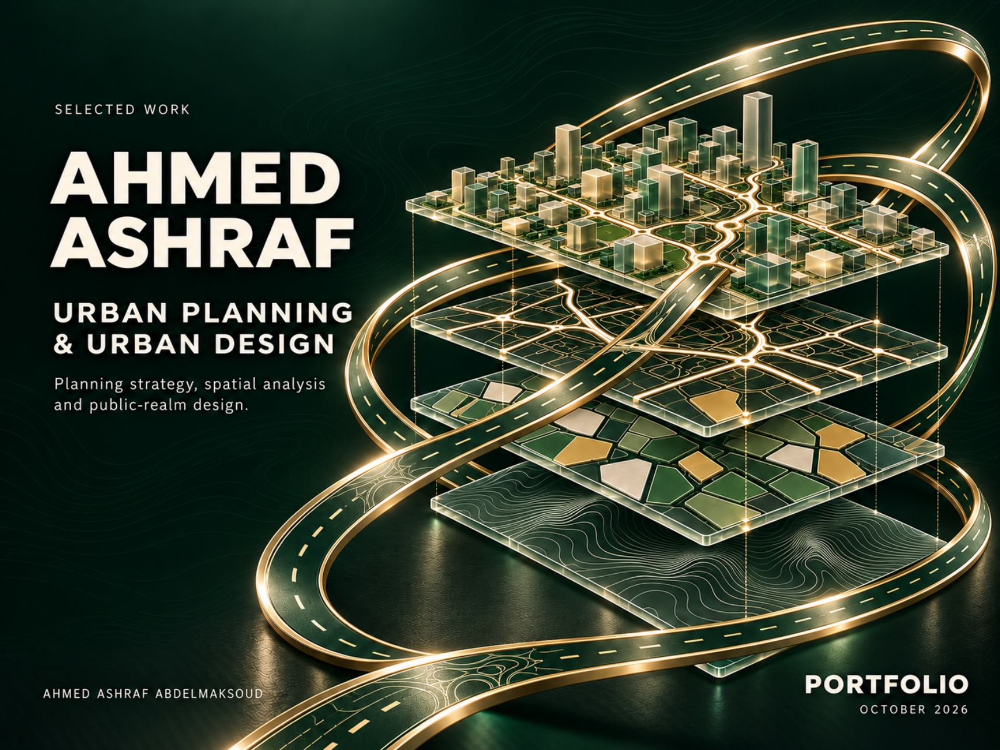
Urban planning · Design · Spatial analysis
From spatial analysis to urban places.
I am Ahmed Ashraf Abdelmaksoud, an urban planner and urban designer based in Madinah. My work spans urban surveying, village development, detailed planning, GIS and public-realm documentation.
Selected work
Projects across scales
Open any project to view its pages in the portfolio PDF. Individual contributions are described in each project.
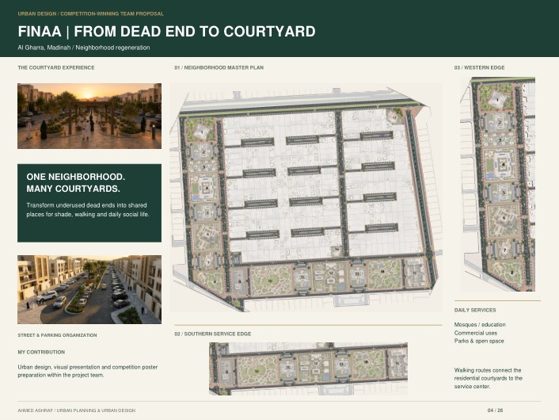
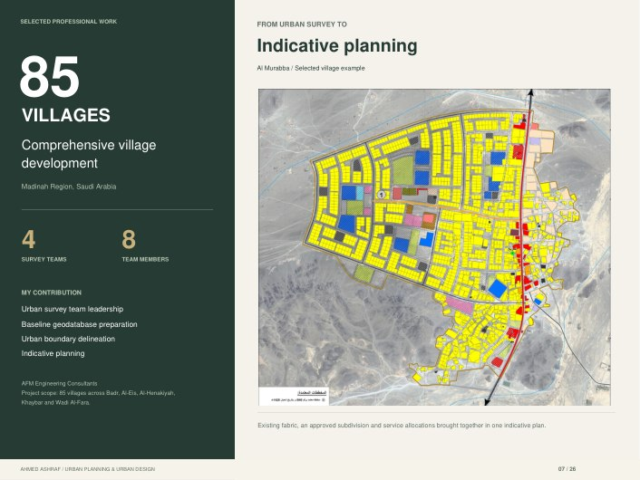
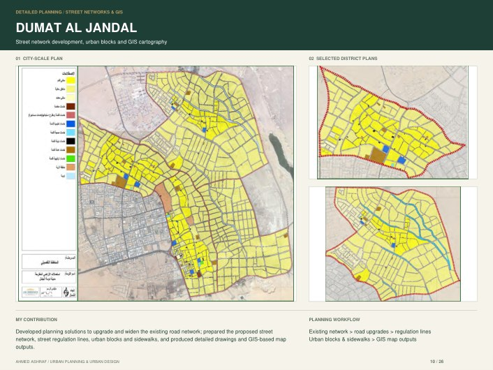
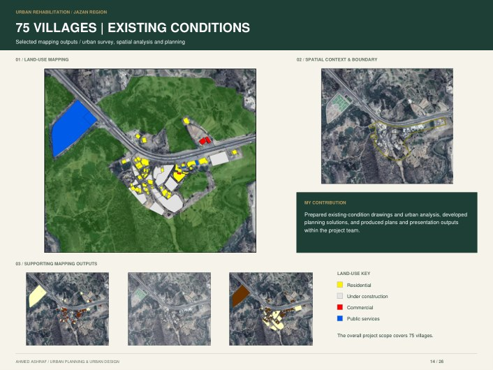
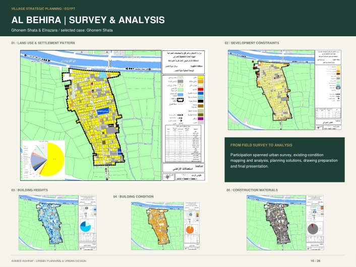
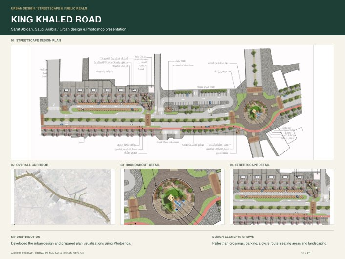
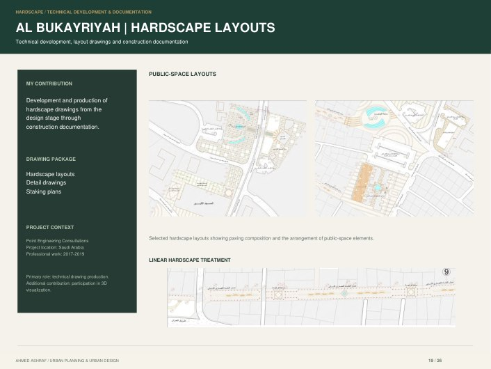
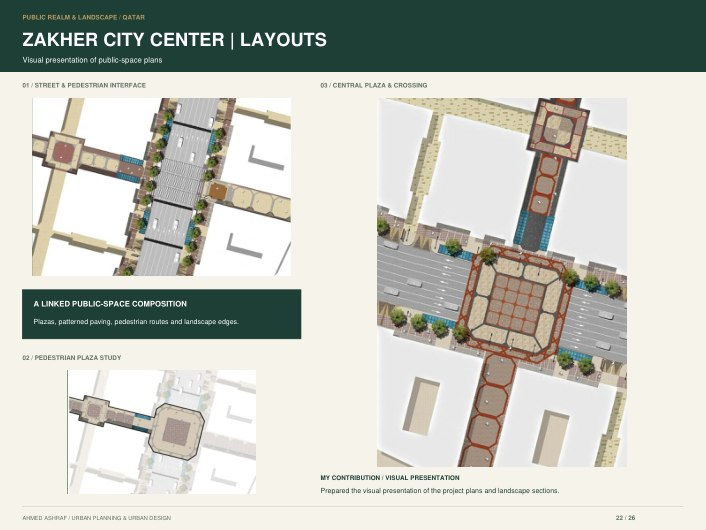
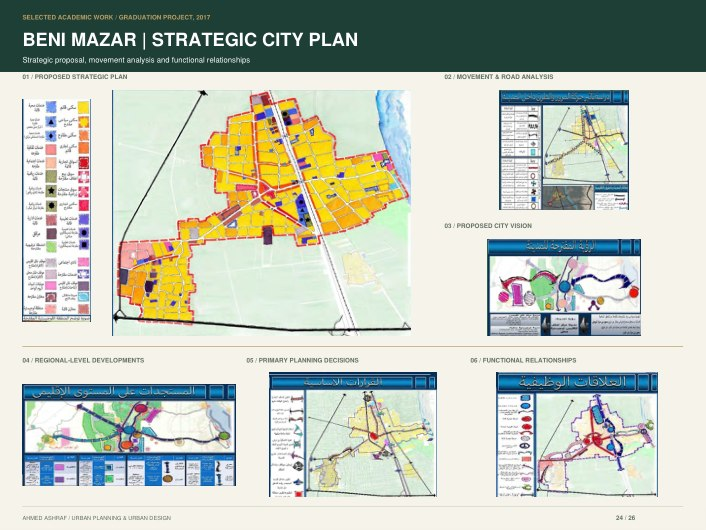
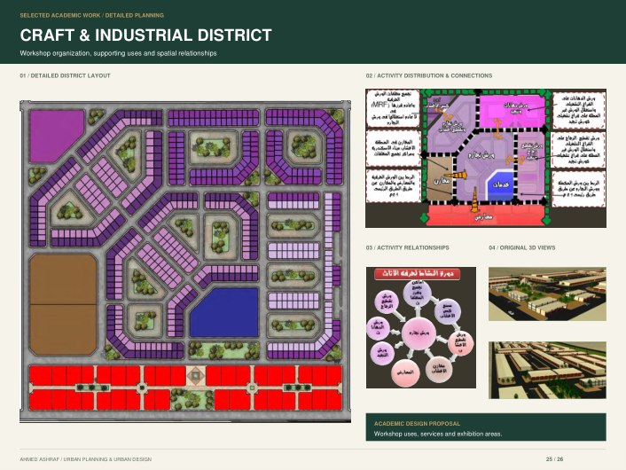
The cover is an AI-generated conceptual illustration. Project drawings and contributions are documented in the portfolio.
Documents
Take a closer look
Curriculum Vitae
Experience, education, expertise and professional background. 2 pages · PDF.
Selected Work Portfolio
Urban planning, urban design, GIS and technical documentation. 26 pages · PDF.
Contact
Let’s connect.
Ahmed Ashraf Abdelmaksoud · Madinah, Saudi Arabia